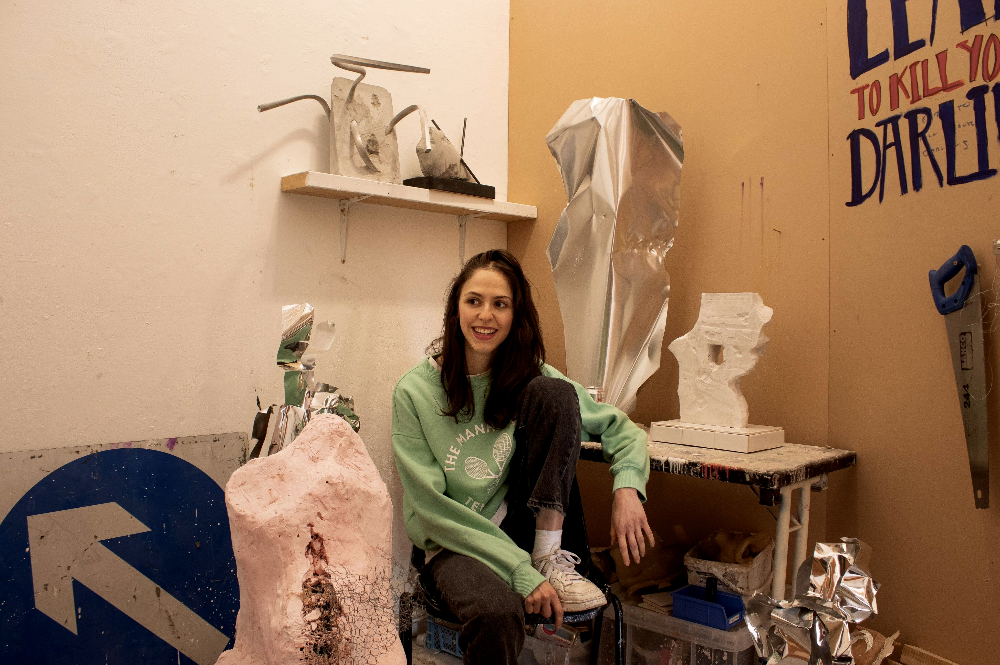
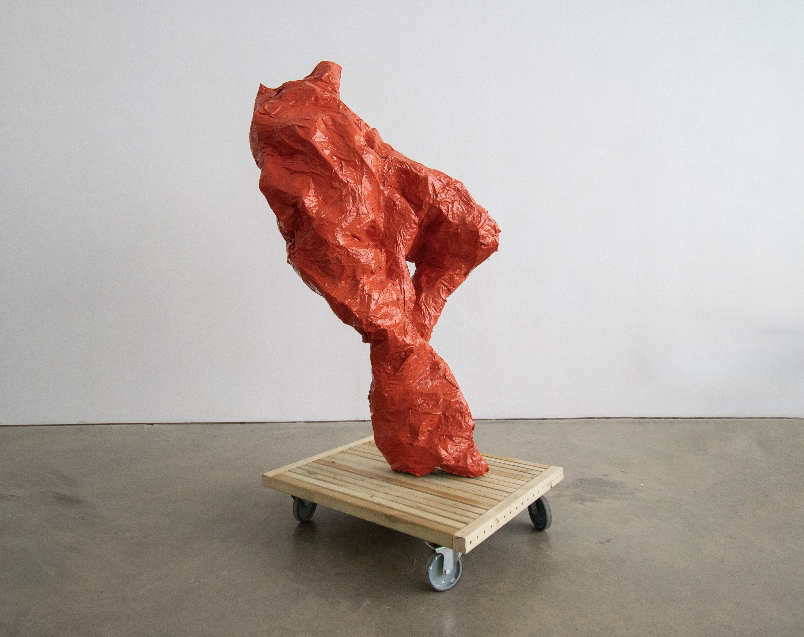
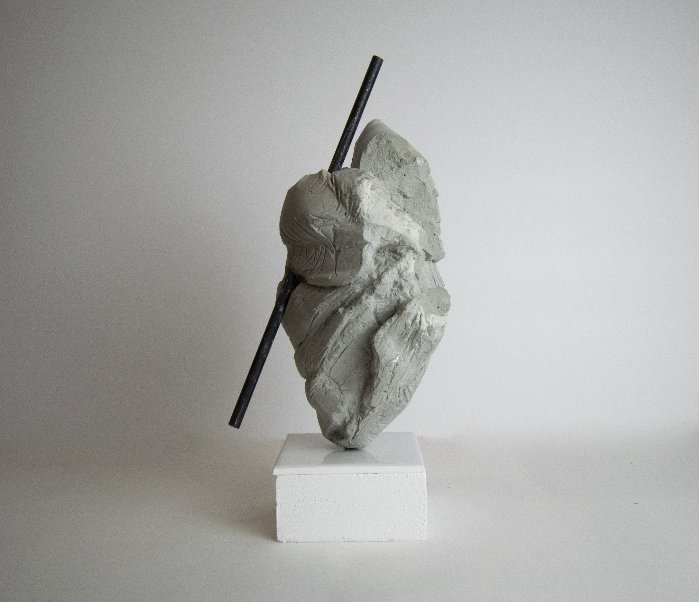
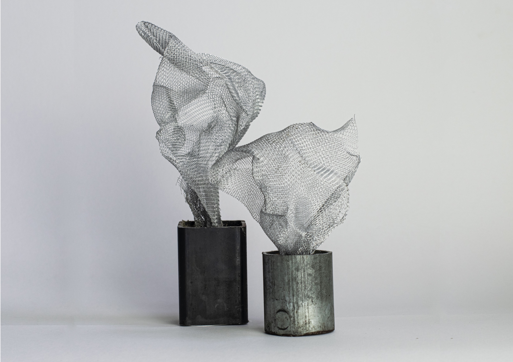

Growing up in London Ashley has been surrounded by rudimentary industrial materials whose banality enabled her imagination to play. The life and stories she prescribes to these substances is the reason that her sculptures highlight the beauty she finds in things otherwise ignored.
Her work is centred within materiality as the texture, form and appearance of her sculptures become an integral resource that enables a viewer to connect with the piece using all of their senses. In particular the cement sculptures are carved by her with only a chisel and mallet, the wooden bases that support these works are personally selected, sawed and sanded having been recycled from older sculptures. Likewise, her larger-scale more bombastic works are formed from this unique process of making which results in her works ability to express her creative desires.


‘I’m Not Really Sure Yet’ (2022)
papier mache, plywood, aluminium

‘Look Mum, No Hands!’ (2021)
cement, steel, plywood

‘Don’t Like What You See? Well Neither Do We’ (2022)
aluminium, steel

‘Frank and His Sister Louise’ (2021)
wire, cement, steel
Contact: @ashleycluer
‘I’m Not Really Sure Yet’ (2022)
papier mache, plywood, aluminium
‘Look Mum, No Hands!’ (2021)
cement, steel, plywood
‘Don’t Like What You See? Well Neither Do We’ (2022)
aluminium, steel
‘Frank and His Sister Louise’ (2021)
wire, cement, steel